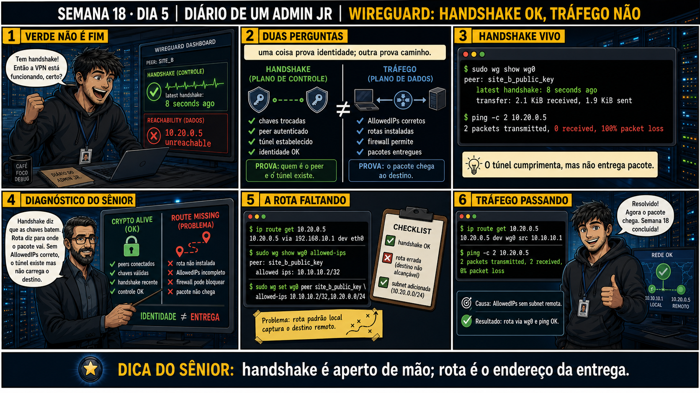

Handshake OK, Tráfego Não
autenticar os dois lados é uma coisa; ter uma rota completa até o destino é outra
ANTES DE ALTERAR, OBSERVE. DEPOIS DE ALTERAR, VALIDE.
1. O chamado
💡 Passa o mouse nas palavras destacadas pra ver uma dica rápida — clica se quiser a explicação completa com analogia.
2. Antes de ver as opções — tenta responder
3. Questão comentada — clica numa alternativa
4. Decodificador de conceitos
Clica em qualquer termo pra ver a definição completa e uma analogia do dia a dia:
5. Ferramentas e leitura da evidência
| Comando | O que faz |
|---|---|
wg show | Confirma o plano de controle: latest handshake recente entre os peers. |
ping 10.99.0.2 | Testa só o túnel em si, IP a IP — isola o plano de controle do resto. |
sysctl net.ipv4.ip_forward | Mostra se o kernel do servidor está autorizado a encaminhar pacotes entre interfaces. |
$ wg show
interface: wg0
peer: (truncado)
latest handshake: 4 seconds ago ← plano de controle: OK
$ ping -c 3 10.99.0.2
0% packet loss ← túnel em si: OK
$ ping -c 3 10.10.10.50
100% packet loss ← plano de dados: FALHA
--- diagnóstico no servidor do Site A ---
$ sysctl net.ipv4.ip_forward
net.ipv4.ip_forward = 0 ← aqui está o problema
$ sysctl -w net.ipv4.ip_forward=1
net.ipv4.ip_forward = 1
$ ping -c 3 10.10.10.50
0% packet loss ← resolvido
5.1 O painel 5 da prancha de hoje mostra o sênior desenhando dois círculos separados: um pro plano de controle, outro pro plano de dados
Um colega vê o wg show todo verde e já descarta qualquer problema de configuração de rede, focando só em procurar bug no WireGuard.
5.2 "Se eu habilitar ip_forward, isso já resolve pra qualquer rede interna, sempre?"
Um colega acha que habilitar ip_forward é a solução universal pra qualquer problema de tráfego não chegando ao destino.
6. Procedimento profissional
- Confirme o plano de controle primeiro: wg show mostrando latest handshake recente nos dois lados.
- Teste o túnel isoladamente: ping entre os IPs do próprio túnel (Address de cada lado).
- Se o túnel em si funciona mas a rede interna não responde, confirme AllowedIPs cobrindo a sub-rede de destino.
- Confirme net.ipv4.ip_forward = 1 no servidor que faz a ponte entre wg0 e a rede interna.
- Confirme que a rede interna sabe rotear a resposta de volta pro IP do túnel.
7. Laboratório guiado — marca conforme for testando
- No túnel montado nos dias anteriores, confirme wg show com latest handshake recente nos dois lados.Resultado esperado: handshake de poucos segundos ou minutos atrás.
- Simule uma terceira VM representando uma rede interna atrás do servidor, e tente pingá-la a partir do lado cliente.Resultado esperado: ping falha inicialmente, mesmo com o túnel funcionando.🧑🏫 Aqui entra o Mentor (em breve): se você não souber por onde começar a investigar, este é o ponto onde o chat com o Sênior-IA vai te guiar pela separação plano de controle / plano de dados.
- Verifique sysctl net.ipv4.ip_forward no servidor que faz a ponte.Resultado esperado: valor 0 antes da correção.
- Habilite com sysctl -w net.ipv4.ip_forward=1 e teste o ping de novo.Resultado esperado: ping pra rede interna funciona agora, 0% de perda.
- Documente a diferença entre os três testes: ping do túnel, ping da rede interna antes e depois do forwarding.Resultado esperado: relatório mostrando claramente onde o plano de controle terminava e o plano de dados começava a falhar.
8. Validação e encerramento
- Handshake recente confirma só o plano de controle — não é prova de entrega de dados.
- Ping entre IPs do túnel isola o problema: se funciona, o túnel em si está saudável.
- ip_forward, AllowedIPs e rota de volta são os três itens do plano de dados a verificar em sequência.
- Cada camada tem seu próprio teste — nenhuma prova a outra.
Rollback e limites
9. Resposta final
🏁 Semana 18 concluída — VPN e WireGuard, do conceito ao diagnóstico completo
Você fechou cinco dias que levaram você do "o que uma VPN realmente protege" até diagnosticar um túnel com handshake perfeito e tráfego zero. No caminho: geração e troca segura de chaves, estrutura completa de wg0.conf, a dualidade de AllowedIPs como rota e filtro, e a separação entre plano de controle e plano de dados — um raciocínio que você vai reaplicar em qualquer protocolo autenticado que resolver na carreira.
Amanhã começa a Semana 19: tcpdump — a ferramenta que permite ver, pacote por pacote, exatamente o que está passando (ou não) pela rede, incluindo dentro de um túnel WireGuard.